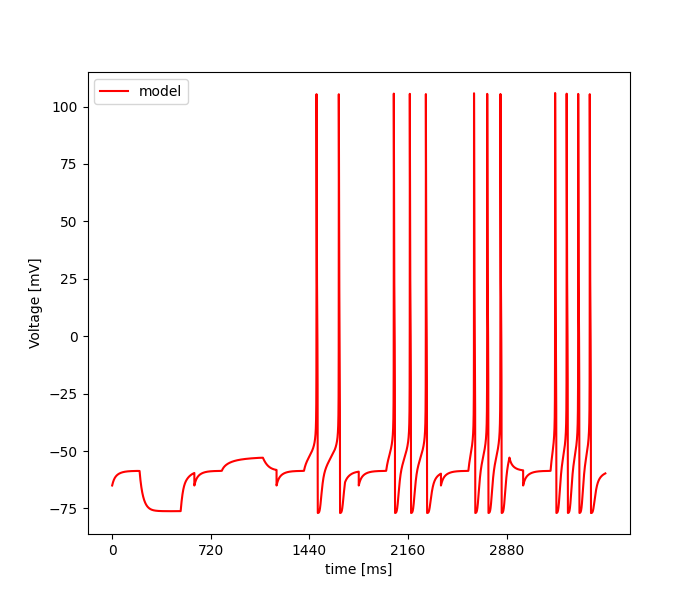

Tue Jul 12 18:41:08 2022
Optimization of ca3_minimum_model.hoc based on: /home/szabolcs/optimizer/optimizer-mate/test/ca3_minimal/opt_data_JMakara_OUR_features_selected_stim.json
Results
| Parameter Name | Minimum | Maximum | Optimum |
|---|---|---|---|
| gmax_Leak_pyr | 5e-08 | 5e-05 | 3.524137320664458e-05 |
| e_leak_pyr | -90.0 | -50.0 | -56.08858682037895 |
| gmax_CaL_pool2_inact_params_minimal_eca | 0.0002 | 0.2 | 0.1160534695580976 |
| A_alpha_X_CaL_pool2_inact_params | 0.1 | 0.5 | 0.16535454861762527 |
| B_alpha_X_CaL_pool2_inact_params | 10.0 | 20.0 | 18.125436112272205 |
| Vhalf_alpha_X_CaL_pool2_inact_params | -10.0 | 10.0 | 0.6322340278544676 |
| Y_v0_CaL_pool2_inact_params | -30.0 | 0.0 | -10.971998266955996 |
| Y_k0_CaL_pool2_inact_params | -10.0 | -1.0 | -4.472994122287502 |
| Y_tau0_CaL_pool2_inact_params | 100.0 | 600.0 | 581.9764255095588 |
| gmax_K_DRS4_params_voltage_dep | 0.0001 | 0.1 | 0.08753678777649715 |
| gkd_kd_params3 | 1e-05 | 0.1 | 0.005015536898912989 |
| theta_a_kd_params3 | -70.0 | -50.0 | -62.40374545107676 |
| theta_b_kd_params3 | -120.0 | -60.0 | -108.20301619757555 |
Fitness: [21.16906672567234]

seed = 1234
current_algorithm = CES - Inspyred
Size of Population = 10.0
Number of Islands = 1.0
Number of Generations = 10.0
Force bounds = False
Mutation Rate = None
Crossover Rate = None
Cooling Rate = None
Mean of Gaussian = None
Std. Deviation of Gaussian = None
Initial Temperature = None
Step Size = None
Temperature = None
Update Frequency = None
Number of Iterations = None
Number of Repetition = None
Error Tolerance for x = None
Error Tolerance for f = None
num_params = 13
boundaries = [[5e-08, -90.0, 0.0002, 0.1, 10.0, -10.0, -30.0, -10.0, 100.0, 0.0001, 1e-05, -70.0, -120.0], [5e-05, -50.0, 0.2, 0.5, 20.0, 10.0, 0.0, -1.0, 600.0, 0.1, 0.1, -50.0, -60.0]]
starting_points = []
Inertia = None
Cognitive Rate = None
Social Rate = None
Neighborhood Size = None
Number of CPU = 2.0
feats = Spikecount, inv_first_ISI, inv_last_ISI, inv_time_to_first_spike, steady_state_voltage, voltage_base, voltage_deflection, voltage_deflection_begin, AHP_depth_abs, AHP_time_from_peak, AP2_amp, AP_amplitude, AP_begin_voltage, AP_duration_half_width, AP_fall_time, AP_rise_time, APlast_amp, time_to_last_spike, sag_amplitude, sag_ratio1
weights = [0.05, 0.05, 0.05, 0.05, 0.05, 0.05, 0.05, 0.05, 0.05, 0.05, 0.05, 0.05, 0.05, 0.05, 0.05, 0.05, 0.05, 0.05, 0.05, 0.05]
user function =
def usr_fun(self,v):
#13
#gmax_Leak_pyr
#e_leak_pyr
#gmax_CaL_pool2_inact_params_minimal_eca
#A_alpha_X_CaL_pool2_inact_params
#B_alpha_X_CaL_pool2_inact_params
#Vhalf_alpha_X_CaL_pool2_inact_params
#Y_v0_CaL_pool2_inact_params
#Y_k0_CaL_pool2_inact_params
#Y_tau0_CaL_pool2_inact_params
#gmax_K_DRS4_params_voltage_dep
#gkd_kd_params3
#theta_a_kd_params3
#theta_b_kd_params3
for sec in h.soma:
sec.gmax_Leak_pyr = v[0]
sec.e_Leak_pyr = v[1]
sec.gmax_CaL_pool2_inact_params_minimal_eca = v[2]
sec.A_alpha_X_CaL_pool2_inact_params_minimal_eca = v[3]
sec.A_beta_X_CaL_pool2_inact_params_minimal_eca = v[3]
sec.B_alpha_X_CaL_pool2_inact_params_minimal_eca = v[4]
sec.B_beta_X_CaL_pool2_inact_params_minimal_eca = -v[4]
sec.Vhalf_alpha_X_CaL_pool2_inact_params_minimal_eca = v[5]
sec.Vhalf_beta_X_CaL_pool2_inact_params_minimal_eca = v[5]
sec.Y_v0_CaL_pool2_inact_params_minimal_eca = v[6]
sec.Y_k0_CaL_pool2_inact_params_minimal_eca = v[7]
sec.Y_tau0_CaL_pool2_inact_params_minimal_eca = v[8]
sec.gmax_K_DRS4_params_voltage_dep = v[9]
sec.gkd_kd_params3 = v[10]
sec.theta_a_kd_params3 = v[11]
sec.theta_b_kd_params3 = v[12]